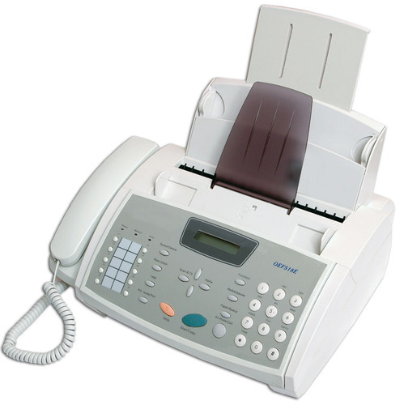

Easy faxing anywhere!!!
|
|
Easy faxing anywhere!!! |
A fax (short for facsimile and sometimes called telecopying) is the telephonic transmission of scanned-in printed material (text or images), usually to a telephone number associated with a printer or other output device. The original document is scanned with a fax machine, which treats the contents (text or images) as a single fixed graphic image, converting it into a bitmap. In this digital form, the information is transmitted as electrical signals through the telephone system. The receiving fax machine reconverts the coded image and prints a paper copy of the document. Fax/modem software generates fax signals directly from disk files or the screen. Even if a document is text only, it is treated by the computer as a scanned image and is transmitted to the receiver as a bitmap. Faxing a message online works well if the recipient wants only to read the message. However, if the document requires editing, it must be converted into ASCII text by an OCR (optical character recognition) program, or it must be retyped manually into the computer. A more efficient method of sending documents that require modification is through the e-mail system. E-mail files are already ASCII text so they can be edited immediately in any text editor or word processing program. |
 |
| TYPES OF FAX MACHINES |
There are basically three types of fax machines, thermal transfer, inkjet and laser fax machines.
Thermal fax machines send and receive information the same way other fax machines do. The scanning mechanism uses photo sensors to scan the document and read thousands of tiny dot areas to determine whether each dot area is black or white. The machine then encodes and compresses this information and sends it over a telephone line to another fax machine. Price: $17.80
An inkjet fax machine works by creating a digital image on the fax paper, using inkjet compatible inks. The inkjet type comes with a great quality fax and is also cheaper than the laser option. But the inkjet fax machines have a lower speed limit and thus, they cannot be installed in the heavy faxing areas. Besides, they also tend to develop mechanical malfunctions in long run.
Price: $19.89
Laser fax machines use static electricity as a form of glue. When a laser fax machine begins to print out a fax, the large dry ink rotatory releases the powdered ink which is attracted to the static electrical shapes on the fax paper, and leaves a copy of the digital image it has received.The laser option uses LED that is quite reliable than the other two types.Laser fax machines are best ever technology. Price: $47.10